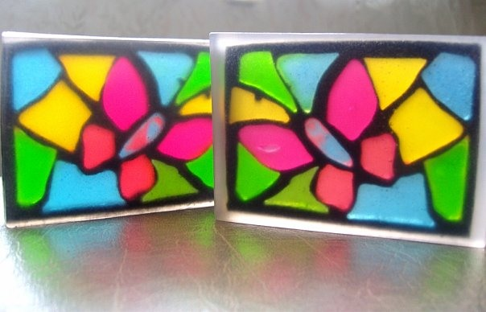

Мыло «Витраж»

Описание
Что может быть романтичнее, чем потоки света, льющегося сквозь разноцветные стекла витражей! А ведь прозрачное мыло так похоже на стекло. К тому же, в отличие от стекла, оно пластично, и не требует сложной технологии обработки… Ну конечно! Из мыла может получиться великолепный витраж! И пусть мыльный витраж не будет столь долговечным, как его классический собрат, но и он успеет удивить и порадовать окружающих своей красотой.
Для начала попробуем изготовить небольшой витраж из мыла размером примерно 10х15 см. Формой для него может послужить обычный контейнер объемом примерно 1 литр из-под салата или мороженого, с плоским дном. Лучше, если он будет прозрачным. А рисунок витража можете нарисовать вы сами или ваш ребенок, а можете поискать интересную схему в интернете. В любом случае не стремитесь воспроизвести слишком сложные рисунки и избегайте мелких деталей. Два – три цвета для начала вполне достаточно. Когда у вас появится опыт, можете взяться за более сложную работу..
Состав
- Прозрачная мыльная основа – 950 грамм
- Белая мыльная основа – 100 грамм
- Красители пищевые гелевые трех любых цветов - по 5 капель каждого цвета
- Краситель пищевой гелевый черный – 8 капель
- Шприц для мыловара
- Очиститель мыловара
Рецепт
- Нарисовать или распечатать схему витража. Сделать две ее копии. Размер схемы должен совпадать с размером формы.
- Если схема черно-белая, отметить на ней цвета деталей.
- На одном экземпляре схемы уменьшить каждую деталь по контуру на 1 мм (чтобы толщина зазора между деталями составляла 2 мм), вырезать детали.
- Растопить 250 г прозрачной основы, добавить краситель одного цвета, вылить в форму и дать застыть. Должен получиться слой толщиной примерно полтора сантиметра. Вынуть первое «стекло» из формы.
- Таким же образом изготовить два «стекла» других цветов. Чтобы цветные слои получились одинаковой высоты, отмеряйте 250 г основы на весах.
- Наложить крой детали на мыльный слой соответствующего цвета и аккуратно вырезать деталь по контуру острым ножом.
- Когда все детали будут готовы, разложить их на втором экземпляре схемы, проверить размеры, сочетание цветов, расстояние между деталями.
- Растопить 100 г прозрачной основы, вылить в форму, сбрызнуть спиртом.
- Быстро, пока основа не застыла, выложить на нее детали витража. Если основа покрылась пленкой, прервите работу. Дайте ей застыть окончательно, острым ножом вырежьте незаполненный деталями участок и аккуратно выньте. Снова растопите, залейте в форму и продолжайте компоновать витраж. Собрать витраж будет легче, если вы возьмете прозрачную форму и положете под нее третий экземпляр схемы.
- Растопить белую мыльную основу, добавить черный краситель, тщательно перемешать.
- Набрать небольшое количество основы в шприц без иглы и аккуратно заполнять промежутки между деталями. Удобнее делать это специальным шприцем для мыловара с загнутым концом. Если черный контур наползет на деталь, не пытайтесь убрать его сразу. Когда контур застынет, все неровности можно будет аккуратно срезать очистителем мыловара.
- Растопить 100 г прозрачной основы и залить ею витраж, предварительно сбрызнув его спиртом. Дать слою застыть.